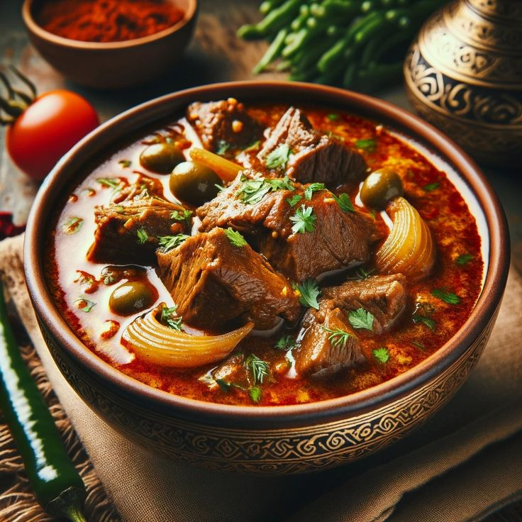

Nihari
History
Nihari originated in the Mughal era and was traditionally eaten by royals after morning prayers. It is a slow-cooked stew made with beef or mutton, infused with aromatic spices.

Recipe
- Heat oil in a pot, add sliced onions, and fry until golden brown.
- Add ginger-garlic paste and sauté for a minute.
- Stir in beef/mutton, salt, and spices, then cook for 10 minutes.
- Add wheat flour mixed with water to thicken the gravy
- - Simmer for 4-6 hours on low heat.
- - Garnish with fried onions, green chilies, and lemon juice. Serve with naan.